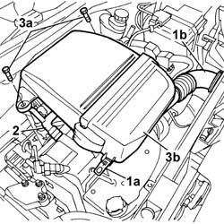
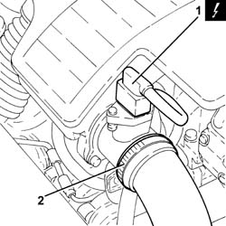
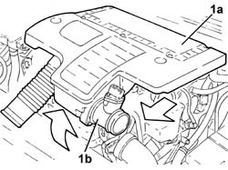
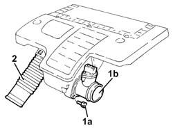

Procedures › 10 ENGINE UNIT › 1048 ENGINE AIR SUPPLY CIRCUIT › 1048A vacuum air circuit › 1048A10 air cleaner filtering element - replace 1048A10 air cleaner filtering element - replace
Path Procedures > 10 ENGINE UNIT > 1048 ENGINE AIR SUPPLY CIRCUIT > 1048A vacuum air circuit > 1048A10 air cleaner filtering element - replace
Kind repair procedure (removal / refitting; the operation number is the code)
Applies to all engines; all production periods
Interactive page https://sloeber94.github.io/elrnDB-fPnd/en/#/2752486
Applies to: engines: 1.1; all production periods
1. Release the fastening clip (1a) and release the cold air intake
hose (1b) from the cold air intake.
2. Release the oil vapour recovery hose from the air filter casing.
3. Undo the fixing bolts (3a) and remove the air filter (3b) complete
with cold air intake hose.
Separate the air filter assembly from the
cold air intake hose at the bench.

Applies to: engines: 1.2 8v; all production periods
1. Release the fastening clip (1a) and release the cold air intake
hose (1b) from the cold air intake.
2. Release the oil vapour recovery hose from the air filter casing.
3. Undo the fixing bolts (3a) and remove the air filter (3b) complete
with cold air intake hose.
Separate the air filter assembly from the
cold air intake hose at the bench.
Applies to: engines: 1.3 JTD 16v; all production periods
Disconnect the battery negative terminal.
1. Disconnect the electrical connection from the air flow meter.
Name
Connector
1
Air flow meter
K41
2. Loosen the band and disconnect the the turbocharger air inlet
sleeve from the rigid pipe, air flow meter side.

Applies to: engines: 1.1; all production periods
Fit the air filter complete with cold air
intake hose in position.
Tighten the air filter fixing bolts.
Fit the cold air intake hose and the oil
vapour recovery hose in position.
Close the clip fastening the air filter
casing.
Applies to: engines: 1.2 8v; all production periods
Fit the air filter complete with cold air
intake hose in position.
Tighten the air filter fixing bolts.
Fit the cold air intake hose and the oil
vapour recovery hose in position.
Close the clip fastening the air filter
casing.
Applies to: engines: 1.3 JTD 16v; all production periods
1. Remove the air filter (1a) complete with air flow meter (1b)
by releasing it first from the lower pins and then from the rear
fastening.

Applies to: engines: 1.3 JTD 16v; all production periods
1. Working at the bench, undo the bolts (1a) and remove the air
flow meter (1b) from the air filter.
2. Disconnect and remove the air filter cold air intake.

Applies to: engines: 1.3 JTD 16v; all production periods
Fit the cold air intake for the air filter
in place.
Place the air flow meter in its housing
on the air filter and secure it using the bolts.
Fit the air filter complete with air flow
meter.
Connect the air intake sleeve to the turbocharger,
air flow meter side, and tighten the band.
Connect the electrical connection to the
air flow meter.
Name
Connector
-
Air flow meter
K41
Connect the battery negative terminal.
Topics that link to this page (87) B13 ENGINE STARTS WITH DIFFICULTY' fault diagnosis table (symptom -> numbered test steps) · all engines; all production periods 0510A20 timing gear with belt drive - check - carry out operation with cam cover(s) removed and tappets adjusted repair procedure (removal / refitting; the operation number is the code) · engines: 1.1, 1.2 8v; all production periods 0510A30 cam lift - check with cam cover(s) removed repair procedure (removal / refitting; the operation number is the code) · engines: 1.1, 1.2 8v; all production periods 0510C10 fuel system - check delivery pressure repair procedure (removal / refitting; the operation number is the code) · engines: 1.1, 1.2 8v; all production periods 1004B12 power unit with manual gearbox - r+r for versions with a/c repair procedure (removal / refitting; the operation number is the code) · all engines; all production periods 1004B13 POWER UNIT WITH MECHANIC TRANSMISSION - R.R. FOR MODELS WITH AIR-CONDITIONER AND FOUR-WHEEL DRIVE repair procedure (removal / refitting; the operation number is the code) · engines: 1.2 8v, 1.3 JTD 16v; all production periods; only with equipment: SUV 1016A20 single cam cover - r + r and replace gasket repair procedure (removal / refitting; the operation number is the code) · engines: 1.1, 1.2 8v; all production periods 1016C10 SINGLE CYLINDER HEAD, REMOVED - OVERHAUL repair procedure (removal / refitting; the operation number is the code) · engines: 1.1, 1.2 8v; all production periods 1016C11 SINGLE CYLINDER HEAD-R R GASKET FOR VERSIONS WITH AIR CONDITIONER repair procedure (removal / refitting; the operation number is the code) · all engines; all production periods 1020D14 FRONT CRANK SHAFT OIL SEAL COVER - R + R AND REPLACE SEALS FOR VERSIONS WITH OIL PUMP ON CRANK SHAFT, TIMING SIDE repair procedure (removal / refitting; the operation number is the code) · engines: 1.1, 1.2 8v; all production periods 1020D16 FRONT CRANKSHAFT OIL SEAL COVER - R+R AND REPLACE GASKETS FOR VERSIONS WITH AIRCONDITIONER repair procedure (removal / refitting; the operation number is the code) · engines: 1.1, 1.2 8v; all production periods 1020D18 FRONT CRANK SHAFT COVER OIL SEAL - REPLACE repair procedure (removal / refitting; the operation number is the code) · engines: 1.1, 1.2 8v; all production periods 1020D20 FRONT CRANKSHAFT COVER OIL SEAL - REPLACE FOR VERSIONS WITH AIR CONDITIONER repair procedure (removal / refitting; the operation number is the code) · engines: 1.1, 1.2 8v; all production periods 1020D26 FLYWHEEL SIDE OIL SEAL COVER - R+R repair procedure (removal / refitting; the operation number is the code) · engines: 1.1, 1.2 8v; all production periods 1020D38 flywheel side oil seal - replace repair procedure (removal / refitting; the operation number is the code) · engines: 1.3 JTD 16v; all production periods 1024B10 engine flywheel - r + r for versions with manual gearbox repair procedure (removal / refitting; the operation number is the code) · engines: 1.1, 1.2 8v; all production periods 1024B12 engine flywheels rr for versions with manual gearbox and air contioner repair procedure (removal / refitting; the operation number is the code) · all engines; all production periods 1024B13 ENGINE FLYWHEEL - R.R. FOR MODELS WITH MECHANIC TRANSMISSION AND FOUR-WHEEL DRIVE repair procedure (removal / refitting; the operation number is the code) · engines: 1.2 8v; all production periods 1028H20 piston with connecting rod - r r repair procedure (removal / refitting; the operation number is the code) · engines: 1.1, 1.2 8v; all production periods 1028H21 piston with connecting rod - r r repair procedure (removal / refitting; the operation number is the code) · all engines; all production periods 1032B10 toothed timing belt - r + r for timing adjustment or replacement repair procedure (removal / refitting; the operation number is the code) · engines: 1.1, 1.2 8v; all production periods 1032B14 toothed timing belt - r + r for timing adjustment or replacement versions with air conditioner repair procedure (removal / refitting; the operation number is the code) · engines: 1.1, 1.2 8v; all production periods 1032B46 toothed drive pulley - r + r repair procedure (removal / refitting; the operation number is the code) · engines: 1.1, 1.2 8v; all production periods 1032B47 toothed drive pulley - r r for versions with air conditioner repair procedure (removal / refitting; the operation number is the code) · all engines; all production periods 1032B52 toothed driven pulley (one) - r + r repair procedure (removal / refitting; the operation number is the code) · engines: 1.1, 1.2 8v; all production periods 1032B53 driven toothed pulley (one) - r r for versions with air conditioner repair procedure (removal / refitting; the operation number is the code) · engines: 1.1, 1.2 8v; all production periods 1032C18 mobile timing system tensioner - r + r for 24 valve engines repair procedure (removal / refitting; the operation number is the code) · engines: 1.1, 1.2 8v; all production periods 1032C19 mobile timing belt tensioner - r r for versions with air conditioner repair procedure (removal / refitting; the operation number is the code) · engines: 1.1, 1.2 8v; all production periods 1032D12 timing system protective cover(s) - r + r repair procedure (removal / refitting; the operation number is the code) · engines: 1.1, 1.2 8v; all production periods 1036B10 overhead camshaft - r r on vehicle repair procedure (removal / refitting; the operation number is the code) · engines: 1.1, 1.2 8v; all production periods 1036B30 overhead camshaft front cover - r + r and replace seals with timing belt removed repair procedure (removal / refitting; the operation number is the code) · engines: 1.1, 1.2 8v; all production periods 1036B34 overhead camshaft rear cover - r + r and replace seals repair procedure (removal / refitting; the operation number is the code) · engines: 1.1, 1.2 8v; all production periods 1036H10 valve tappets - check and adjust clearance repair procedure (removal / refitting; the operation number is the code) · engines: 1.1, 1.2 8v; all production periods 1036H14 valve tappets - check clearance repair procedure (removal / refitting; the operation number is the code) · engines: 1.1, 1.2 8v; all production periods 1056B14 throttle case - r + r repair procedure (removal / refitting; the operation number is the code) · engines: 1.1, 1.2 8v; all production periods 1056B50 coolant temperature sensor - r + r repair procedure (removal / refitting; the operation number is the code) · engines: 1.1, 1.2 8v; all production periods 1056B54 intake air pressure/temperature sensor - r r repair procedure (removal / refitting; the operation number is the code) · engines: 1.1, 1.2 8v; all production periods 1056B60 single fuel manifold pipe, with injectors - r + r repair procedure (removal / refitting; the operation number is the code) · engines: 1.1, 1.2 8v; all production periods 1056B69 SET OF INJECTORS - R.R. - Comp. gasket replacement repair procedure (removal / refitting; the operation number is the code) · engines: 1.1, 1.2 8v; all production periods 1068A30 accelerator control cable - r + r repair procedure (removal / refitting; the operation number is the code) · engines: 1.1, 1.2 8v; all production periods 1068A31 ACCELERATOR CABLE - R R FOR RH DRIVE VERSIONS repair procedure (removal / refitting; the operation number is the code) · engines: 1.2 8v; all production periods; only with equipment: Right hand drive 1072B10 inlet manifold - r + r and replace seal repair procedure (removal / refitting; the operation number is the code) · engines: 1.1, 1.2 8v; all production periods 1072C16 exhaust manifold with catalytic converter - r r repair procedure (removal / refitting; the operation number is the code) · engines: 1.1, 1.2 8v; all production periods 1076B10 exhaust pipe assembly - r + r repair procedure (removal / refitting; the operation number is the code) · all engines; all production periods 1080B62 catalytic converter - r + r repair procedure (removal / refitting; the operation number is the code) · engines: 1.1, 1.2 8v; all production periods 1080B94 front lambda probe with catalitic converter r r repair procedure (removal / refitting; the operation number is the code) · engines: 1.1, 1.2 8v; all production periods 1080B98 LAMBDA SENSORS (all) - R.R. repair procedure (removal / refitting; the operation number is the code) · engines: 1.1, 1.2 8v; all production periods 1080D22 oil vapour pipe from cam cover to intake r r repair procedure (removal / refitting; the operation number is the code) · engines: 1.1, 1.2 8v; all production periods 1080E28 enablement solenoid for flow of fuel vapour to inlet - r+r repair procedure (removal / refitting; the operation number is the code) · engines: 1.1, 1.2 8v; all production periods 1080E62 pipe from fuel vapour separator to solenoid - r r repair procedure (removal / refitting; the operation number is the code) · engines: 1.1, 1.2 8v; all production periods 1084B50 timing mount oil pipe - r r repair procedure (removal / refitting; the operation number is the code) · engines: 1.1, 1.2 8v; all production periods 1088B20 engine cooling radiator - r + r repair procedure (removal / refitting; the operation number is the code) · engines: 1.1, 1.2 8v; all production periods 1088B24 engine cooling radiator - r r for air conditioned versions repair procedure (removal / refitting; the operation number is the code) · all engines; all production periods 1088C10 water pump - r + r repair procedure (removal / refitting; the operation number is the code) · engines: 1.1, 1.2 8v; all production periods 1088C12 water pump - r+r for versions with air conditioner repair procedure (removal / refitting; the operation number is the code) · all engines; all production periods 1088C30 thermostat unit - r+r repair procedure (removal / refitting; the operation number is the code) · engines: 1.1, 1.2 8v; all production periods 1088D53 RIGID supply or return PIPES for ENGINE OIL HEAT EXCHANGER - R.R. repair procedure (removal / refitting; the operation number is the code) · engines: 1.3 JTD 16v; all production periods 1088E10 radiator cooling fan - r + r repair procedure (removal / refitting; the operation number is the code) · engines: 1.1, 1.2 8v; all production periods 1092B42 Air conditioning compressor and alternator drive belt TENSIONER - R.R. repair procedure (removal / refitting; the operation number is the code) · engines: 1.1, 1.2 8v; all production periods 1810A20 clutch - r + r repair procedure (removal / refitting; the operation number is the code) · all engines; all production periods 1810A28 clutch - r r for manual gearbox with hydraulic selection versions repair procedure (removal / refitting; the operation number is the code) · engines: 1.2 8v; all production periods 1810A30 CLUTCH - R.R. FOR FOUR-WHEEL DRIVE MODELS repair procedure (removal / refitting; the operation number is the code) · engines: 1.2 8v; all production periods 1820A19 THRUST BEARING CONTROL LEVERAGE - R.R. FOR FOUR-WHEEL DRIVE MODELS repair procedure (removal / refitting; the operation number is the code) · engines: 1.2 8v; all production periods 1820A24 thrust bearing linkage - r + r repair procedure (removal / refitting; the operation number is the code) · engines: 1.1, 1.2 8v; all production periods 2110A10 manual gearbox and differential - r + r repair procedure (removal / refitting; the operation number is the code) · all engines; all production periods 2110A16 MECHANICAL GEAR WITH DIFFERENTIAL - R.R. FOR 4X4 VERSIONS repair procedure (removal / refitting; the operation number is the code) · engines: 1.2 8v; all production periods 2125C30 GEAR ENGAGEMENT CABLE - R R repair procedure (removal / refitting; the operation number is the code) · all engines; all production periods 3330C10 (PUMP) - MASTER CYLINDER R.R. repair procedure (removal / refitting; the operation number is the code) · all engines; all production periods 3330C14 (PUMP) - MASTER CYLINDER .R.R for versions with A.B.S. repair procedure (removal / refitting; the operation number is the code) · all engines; all production periods 3330D02 brake servo/brake pump assembly - r r repair procedure (removal / refitting; the operation number is the code) · all engines; all production periods 3330D10 brake servo - r+r - includes separation from master cylinder (pump) repair procedure (removal / refitting; the operation number is the code) · all engines; all production periods 3330D14 brake servo - r+r for versions with abs - includes separation from master cylinder (pump) repair procedure (removal / refitting; the operation number is the code) · all engines; all production periods 3330D20 one-way valve for brake servo - r+r repair procedure (removal / refitting; the operation number is the code) · all engines; all production periods 3330E52 RIGID PIPE from master cylinder to LEFT front brake - R.R. repair procedure (removal / refitting; the operation number is the code) · all engines; all production periods 3330E53 RIGID PIPE from master cylinder to RIGHT front brake - R.R. repair procedure (removal / refitting; the operation number is the code) · all engines; all production periods 3340A12 A'B.S. system. - electronic and hydraulic CONTROL UNIT R.R. repair procedure (removal / refitting; the operation number is the code) · all engines; all production periods 3340A13 abs central mount - r r repair procedure (removal / refitting; the operation number is the code) · all engines; all production periods 3340B55 central brake pipe to lh - r r repair procedure (removal / refitting; the operation number is the code) · all engines; all production periods 3340B56 RIGID PIPE from hydraulic CONTROL UNIT to RIGHT FRONT BRAKE - R.R. repair procedure (removal / refitting; the operation number is the code) · all engines; all production periods 3340B62 rear connection central pipe - r r repair procedure (removal / refitting; the operation number is the code) · all engines; all production periods 4410D13 front suspension beam - r r repair procedure (removal / refitting; the operation number is the code) · all engines; all production periods 4410D14 front suspension crossbeam - r+r with wishbones removed repair procedure (removal / refitting; the operation number is the code) · all engines; all production periods 5010A12 engine/heater line - r r repair procedure (removal / refitting; the operation number is the code) · all engines; all production periods 5010A16 heater/engine line - r r repair procedure (removal / refitting; the operation number is the code) · all engines; all production periods 5510C10 ignition coil/s - r+r repair procedure (removal / refitting; the operation number is the code) · engines: 1.1, 1.2 8v; all production periods 5530A10 alternator - r+r repair procedure (removal / refitting; the operation number is the code) · engines: 1.1, 1.2 8v; all production periods 5530A14 alternator - r+r for versions with air conditioner repair procedure (removal / refitting; the operation number is the code) · all engines; all production periods
 Removing
Removing Refitting
Refitting